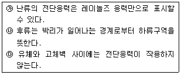
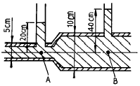
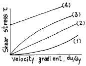
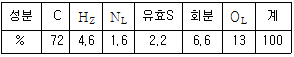
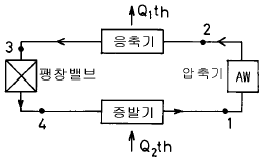
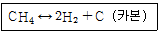
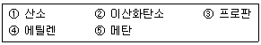

가스기사 (2003-03-16 기출문제)
1과목: 가스유체역학
1. 점성력에 대한 관성력의 상대적인 비를 나타내는 무차원의 수는?
- Reynolds수
- Froude수
- 모세관수
- Weber수
(정답률: 73%)

2. 충격이나 맥동 없이 액체를 균일한 압력으로 수송할 수 있으며 그 두(head)에 있어 제한을 받으므로 비교적 낮은 압력에서 사용되는 펌프는?
- 회전펌프
- 피스톤펌프
- 플런져펌프
- 원심펌프
(정답률: 42%)
3. 안지름이 0.2m 인 실린더 속에 물이 가득 채워져 있고, 바깥지름이 0.18m 인 피스톤이 0.⑤m/sec의 속도로 주입되고 있다. 이 때 실린더와 피스톤 사이의 틈으로 역류하는 물의 속도는?
- 0.113 m/sec
- 0.213 m/sec
- 0.313 m/sec
- 0.413 m/sec
(정답률: 알수없음)
4. 길이 5m, 내경 5㎝ 인 강관내를 물이 유속 3m/s로 흐를 때 마찰손실 수두는? (단, 마찰손실계수는 0.03 이다.)
- 1.38m
- 2.62m
- 3.⑤m
- 3.43m
(정답률: 60%)
5. 유체의 흐름에 대한 설명으로 다음 중 옳은 것은?

- ㉮, ㉰
- ㉯
- ㉮, ㉯
- ㉰
(정답률: 40%)
6. 어느 물리량의 함수관계가 F(ρ , h, ℓ ,g) = 0 로 주어졌을 때 무차원 수는? (단, ρ : 밀도, h : 깊이, ℓ : 길이, g : 중력가속도이다.)
- 1
- 2
- 3
- 4
(정답률: 50%)
7. 내경이 0.⑤26 m 인 철관에 유체가 9.085 m3/h 로 흐를 때의 유속은? (단, 밀도는 1200㎏/m3 이다.)
- 3.26 m/s
- 1.16 m/s
- 11.6 m/s
- 4.68 m/s
(정답률: 62%)
8. 어떤 펌프로 물을 수송하는데 전양정이 12m, 송출량이 0.1m3/s, 펌프효율이 90% 일 때 축동력은 몇 kW인가?
- 5.8
- 18.4
- 13.1
- 9.3
(정답률: 54%)
9. 지름이 25cm 인 원형관 속을 5.7m/sec 의 평균속도로 물이 흐르고 있다. 40m 에 걸친 실험결과의 수두 손실이 5m로 나타났다. 이 때의 마찰계수는?
- 0.1075
- 0.1547
- 0.2089
- 0.2621
(정답률: 20%)
10. 이상기체에서 음속은 다음 중 무엇에 비례하는가?
- 절대압력
- 밀도
- 절대온도
- 가스정수의 역수
(정답률: 알수없음)
11. Isentropic flow 를 잘 나타낸 것은?
- 비가역단열흐름
- 이상기체흐름
- 가역단열흐름
- 이상유체흐름
(정답률: 55%)
12. 다음 그림에서와 같이 관속으로 물이 흐르고 있다. A점과 B점에서의 유속은 몇[m/s]인가? (단, uA : A점에서의 유속, uB : B점에서의 유속)

- uA = 2.045, uB = 1.022
- uA = 2.045, uB = 0.511
- uA = 7.919, uB = 1.980
- uA = 3.960, uB = 1.980
(정답률: 58%)
13. 유속을 무시할 수 있고 온도가 30℃ 인 저장탱크로부터 공기가 흘러 나온다. 이 흐름은 정상상태 단열이다. Mach수 2.5 인 점의 기체온도는? (단, k는 1.4 이다)
- 108.3 ℃
- 138.3 ℃
- -108.3 ℃
- -138.3 ℃
(정답률: 알수없음)
14. 완전 기체에 대한 설명으로 옳은 것은?
- 포화상태에 있는 포화 증기를 뜻한다.
- 완전기체의 상태 방정식을 만족시키는 기체이다.
- 체적 탄성계수가 언제나 일정한 기체이다.
- 높은 압력하의 기체를 뜻한다.
(정답률: 58%)
15. 배관에 기체가 흐를 때 일어날 수 있는 과정이 아닌것은?
- 등엔트로피 팽창(insentropic expansion)
- 단열마찰 흐름(adiabatic friction flow)
- 등압마찰 흐름(isobaric friction flow)
- 등온마찰 흐름(isothermal friction flow)
(정답률: 47%)
16. 전단응력(shear stress)과 속도구배와의 관계를 나타낸 그림에서 빙햄 플라스틱 유체 (Bingham plastic fluid)에 관한 것은?

- (1)
- (2)
- (3)
- (4)
(정답률: 55%)
17. 마찰계수와 마찰저항에 대한 설명으로 옳지 않은 것은?
- 관 마찰계수는 레이놀즈수와 상대조도의 함수로 나타낸다.
- 평판상의 층류흐름에서 점성에 의한 마찰계수는 레이놀즈수의 제곱근에 정비례한다.
- 층상 운동에서의 마찰 저항은 온도의 영향을 받으며 유체의 점성계수에 정비례한다.
- 난류 운동에서 마찰저항은 평균유속의 제곱에 정비례 한다.
(정답률: 37%)
18. 안지름 200[mm] 인 관속을 흐르고 있는 공기의 평균 풍속이 20[m/sec]이면 공기는 매초 몇 [kg] 이 흐르겠는가? (단, 관속의 정압은 2[kg/㎝2 abs], 온도는 15℃, 공기의 기체상수 R = 29.27[kgㆍm/kgㆍk] 이다.)
- 1.49[kg/sec]
- 2.25[kg/sec]
- 3.37[kg/sec]
- 4.30[kg/sec]
(정답률: 20%)
19. 원심식 압축기와 비교한 왕복식 압축기의 특징이 아닌 것은?
- 기계적 접촉 부분이 많다.
- 대풍량에 적합하지 않다.
- 압력 변화에 따라 풍량의 변화가 없다.
- 압력비가 낮다.
(정답률: 40%)
20. 무차원의 수인 Peclet수(Pe)를 정의한 것으로 옳은 것은?
- 대류속도/확산속도
- 확산속도/대류속도
- 반응속도/대류속도
- 대류속도/반응속도
(정답률: 29%)
2과목: 연소공학
21. Polytropic change에서 P.Vn = 일정 일 때 n = 1인 경우 나타내는 열역학적 변화는? (단, P, V는 압력과 체적이며 n는 상수이다.)
- 등온압축
- 등적압축
- 등압압축
- 폴리트로픽압축
(정답률: 39%)
22. 다음과 같은 조성을 갖고 있는 어떤 석탄의 총발열량이 8570kcal/kg이라 할 때 이 석탄의 진발열량(kcal/kg석탄)은? (단, 물의 증발열 586kcal/kg 임)

- 5330
- 6330
- 7330
- 8330
(정답률: 알수없음)
23. 유류화재를 B급 화재라 한다. 이 때 소화약제로 쓰이는 것은?
- 건조사, CO가스
- 불연성기체, 유기소화액
- CO2, 포, 분말약제
- 봉상주수, 산ㆍ알칼리액
(정답률: 75%)
24. 공연비(A/F)에 대한 정의로 올바른 것은?
- 혼합기 중의 공기와 연료의 질량비이다.
- 혼합기 중의 연료와 공기의 부피비이다.
- 혼합기 중의 연공비와 공기비의 곱이다.
- 공기과잉률이라고 하며 당량비의 역수이다.
(정답률: 58%)
25. 수소와 산소의 연쇄반응에 의한 폭발반응에서 연쇄운반체가 아닌 것은?
- Hㆍ
- Oㆍ
- HOㆍ
- H3Oㆍ
(정답률: 43%)
26. LNG의 유출사고시 메탄가스의 거동에 관한 다음 설명 중 가장 옳은 것은?
- 메탄가스의 비중은 공기보다 크므로 증발된 가스는 지상에 체류한다.
- 메탄가스의 비중은 공기보다 작으므로 증발된 가스는 위로 확산되어 지상에 체류하는 일이 없다.
- 메탄가스의 비중은 상온에는 공기보다 작으나 온도가 낮으면 공기보다 커지기 때문에 지상에 체류한다.
- 메탄가스의 비중은 상온에서는 공기보다 크나 온도가 낮으면 공기보다 작아지기 때문에 지상에 체류하는 일이 없다.
(정답률: 50%)
27. 다음 중 폭발방호(Explosion Protection)대책과 관계가 가장 적은 것은?
- Explosion Venting
- Adiabatic Compression
- Containment
- Explosion Suppression
(정답률: 62%)
28. 연료 1kg에 대한 이론 산소량 (Nm3/kg)을 구하는 식은?
- 2.67C + 7.6H - (O/8- S)
- 8.89C + 26.67(H -O/8) + 3.33S
- 11.49C + 34.5(H -O/8) + 4.3S
- 1.87C + 5.6(H -O/8) + 0.7S
(정답률: 알수없음)
29. 600℃의 고열원과 200℃의 저열원 사이에서 작동하는 사이클의 최대 효율(%)은 얼마인가?
- 31.7
- 45.8
- 57.1
- 61.8
(정답률: 47%)
30. 체적이 0.1m3인 용기 안에서 압력 1MPa, 온도 250℃의 공기가 냉각되어 압력이 0.35MPa이 될 때 엔트로피 변화는 약 몇 kJ/K 인가?
- - 0.3
- - 0.4
- - 0.5
- - 0.6
(정답률: 0%)
31. 1종 장소와 2종 장소에 적합한 구조로 전기기기를 전폐구조의 용기 또는 외피 속에 넣고 그 내부에 불활성 가스를 압입하여 내부압력을 유지함으로서 가연성 가스가 용기내부로 유입되지 않도록 한 방폭구조는?
- 안전증방폭구조(Increased safety "e")
- 내압방폭구조(Flame proof enclosure "d")
- 유입방폭구조(Oil immersion "o")
- 압력방폭구조(Preessurized apparatus "f")
(정답률: 27%)
32. 다음중 열역학 제1법칙을 설명한 것은?
- 우주의 에너지는 일정하지 않고 항상 변한다.
- 열은 낮은 온도부터 높은 온도로는 흐른다.
- 어떤 계에 있어서 에너지 증가는 그 계에 흡수된 열량에서 그 계가 한 일을 뺀 것과 같다.
- 우주의 엔트로피는 최대로 향해가고 있다.
(정답률: 47%)
33. 가연성 물질의 폭굉 유도거리(DID)가 짧아지는 요인에 해당되지 않는 경우는?
- 주위의 압력이 낮을수록
- 점화원의 에너지가 클수록
- 정상 연소 속도가 큰 혼합가스일수록
- 관속에 방해물이 있거나 관경이 가늘수록
(정답률: 50%)
34. 다음 표면연소에 대한 설명 중 올바르게 설명된 것은?
- 오일표면에서 연소하는 상태
- 고체 연료가 화염을 길게 내면서 연소하는 상태
- 화염의 외부 표면에 산소가 접촉하여 연소하는 현상
- 적열된 코우크스 또는 숯의 표면에 산소가 접촉하여 연소하는 상태
(정답률: 39%)
35. 2차 공기란 어떤 공기를 말하는가?
- 연료를 분사시키기 위해 필요한 공기
- 완전연소에 필요한 부족한 공기를 보충 공급하는 것
- 연료를 안개처럼 만들어 연소를 돕는 공기
- 연소된 가스를 굴뚝으로 보내기 위해 고압송풍하는 공기
(정답률: 67%)
36. 다음 연소속도에 관한 설명중 옳은 것은?
- 연소속도의 단위는 ㎏/sec로 나타낸다.
- 연소속도는 미연소 혼합기류의 화염면에 대한 법선 방향의 분속도이다.
- 연소속도는 연료의 종류, 온도, 압력, 공기, 유속과는 무관하다.
- 연소속도는 정지 관찰자에 상대적인 화염의 이동속도이다.
(정답률: 39%)
37. 다음은 증기냉동사이클의 구성을 나타낸 그림이다. 등압 응축 일어나는 과정은 어떤 곳인가?

- 1 → 2 과정
- 2 → 3 과정
- 3 → 4 과정
- 4 → 1 과정
(정답률: 43%)
38. 에틸렌(ethylene) 1[m3]을 완전히 연소시키는데 필요한 공기의 양은 몇[m3]인가? (단, 공기중의 산소 및 질소의 함량 21[vol.%], 79[vol.%]이다.)
- 약 9.52
- 약 11.90
- 약 14.29
- 약 19.04
(정답률: 45%)
39. 외부와의 에너지 출입이 차단된 조건에서 연소가 진행될 때 연소가스의 온도는?
- 최저 화염온도
- 가역 연소온도
- 최적 연소온도
- 단열 화염온도
(정답률: 36%)
40. 프로판 및 메탄의 폭발하한계는 각각 2.5vol%, 5.0vol%이다. 프로판과 메탄이 4:1의 체적비로 있는 혼합가스의 폭발하한계는 약 몇 vol%인가? (단, 상온, 상압 상태이다.)
- 0.56%
- 2.78%
- 4.50%
- 6.75%
(정답률: 46%)
3과목: 가스설비
41. 지하에 매설하여 설치하는 배관의 이음방법으로 적합하지 않는 것은?
- 링조인트 접합
- 용접 접합
- 플랜지 접합
- 열융창 접합
(정답률: 43%)
42. 펌프를 운전할 때 펌프내에 액이 충만되지 않으면 공회전 하여 펌프작업이 이루어지지 않는 현상을 방지하기 위해 펌프내에 액을 충만시키는 것을 무엇이라 하는가?
- 베이퍼록(vaper lock) 현상
- 프라이밍(priming) 현상
- 캐비테이션(cavitation) 현상
- 서징(surging) 현상
(정답률: 67%)
43. 다음 중 끓는점이 가장 높아서 겨울이나 한냉지에서 기화가 곤란한 가스는?
- 메탄
- 에탄
- 프로판
- 부탄
(정답률: 29%)
44. 서어징(surging)의 발생 원인이 아닌 것은?
- 압력이 주기적으로 변화할 때
- 배관 중에 물 탱크나 공기 탱크가 있을 때
- 운전상태가 펌프의 고유 진동수와 같을 때
- 펌프의 양정곡선이 우향 감소 구배일 때
(정답률: 34%)
45. 일반 도시가스 사업의 고압 또는 중압의 가스 공급시설은 최고 사용압력의 몇 배 이상으로 내압시험을 하는가?
- 1배
- 1.5배
- 2배
- 2.5배
(정답률: 34%)
46. 고압가스 저장탱크와 유리제 게이지를 접속하는 상, 하배관에 설치해야 하는 밸브는?
- 자동식 스톱밸브
- 수동식 스톱밸브
- 자동식 및 수동식의 스톱밸브
- 역류방지밸브
(정답률: 40%)
47. 액화산소용기에 액화산소가 50[㎏] 충전되어있다. 이 때, 용기외부에서 액화산소에 대하여 5[㎉/hr]의 열량이 주어진다면 액화산소량이 반으로 감소되는데 걸리는 시간은? (단, 산소의 증발잠열은 1.6[㎉/㏖] 이다.)
- 2.5 시간
- 25 시간
- 125 시간
- 250 시간
(정답률: 24%)
48. LPG 를 연료로 하는 차량에 LPG 를 충전하기 위한 용적계량계로 디스펜사를 사용하고 있다. 액온을 조정 환산하기 위하여 디스펜사에 내장되어있는 자동온도 보정장치의 기준온도는?
- 5℃
- 15℃
- 25℃
- 35℃
(정답률: 31%)
49. 화염의 리프트(lift) 현상의 원인이 아닌 것은?
- 배기 불충분
- 1차 공기량의 과다
- 노즐의 줄어듬
- 가스압의 과다
(정답률: 8%)
50. 왕복식 압축기에서 실린더를 냉각시켜 얻을 수 있는 냉각 효과가 아닌 것은?
- 체적 효율의 증가
- 압축효율의 증가(동력감소)
- 윤활 기능의 유지 향상
- 윤활유의 질화 방지
(정답률: 34%)
51. 고온 고압에서 수소가스 설비에 탄소강을 사용하면 수소 취화를 일으키게 되므로 이것을 방지하기 위하여 첨가시키는 금속 원소로서 적당하지 않은 것은?
- 몰리브덴
- 구리
- 텅스텐
- 바나듐
(정답률: 31%)
52. 금속재료에 관한 설명으로 옳지 않은 것은?
- 황동은 구리와 아연의 합금이다.
- 저온뜨임의 주목적은 내부응력 제거이다.
- 탄소함유량이 0.3% 이하인 강을 저탄소강이라 한다.
- 청동은 내식성은 좋으나 강도가 약하다.
(정답률: 50%)
53. 파이프의 길이가 5m 이고,선팽창계수 α = 0.000015(1/℃)일 때 온도가 20℃ 에서 70℃ 로 올라갔다면 늘어난 길이는?
- 2.74㎜
- 3.75㎜
- 4.78㎜
- 5.76㎜
(정답률: 44%)
54. 아세틸렌 제조공정에서 꼭 필요하지 않은 장치는?
- 저압 건조기
- 유분리기
- 역화방지기
- CO2 흡수기
(정답률: 50%)
55. 다음 반응과 같은 접촉분해 공정중에서 카본생성을 방지하는 방법으로 옳은 것은?(오류 신고가 접수된 문제입니다. 반드시 정답과 해설을 확인하시기 바랍니다.)

- 반응온도를 낮게, 압력을 높게
- 반응온도를 높게, 압력을 낮게
- 반응온도를 높게, 압력을 높게
- 반응온도를 낮게, 압력을 낮게
(정답률: 30%)
56. 양정이 높을 때 사용하는 펌프는?
- 1단펌프
- 다단펌프
- 단흡입 펌프
- 양흡입 펌프
(정답률: 50%)
57. 압축기에서 다단 압축을 하는 목적은?
- 압축일과 체적효율의 증가
- 압축일과 체적효율의 감소
- 압축일 증가와 체적효율감소
- 압축일 감소와 체적효율증가
(정답률: 60%)
58. 상용 압력 200㎏/㎝2 인 고압 설비의 안전 밸브 작동압력은 몇 ㎏/㎝2 이하 인가?
- 200㎏/㎝2
- 240㎏/㎝2
- 150㎏/㎝2
- 300㎏/㎝2
(정답률: 42%)
59. 용기밸브의 충전구가 왼나사 구조인 것은?
- 브롬화메탄
- 암모니아
- 산소
- 에틸렌
(정답률: 54%)
60. 분자량이 큰 탄화수소를 원료로 10000 ㎉/Nm3 정도의 고열량 가스를 제조하는 방법은?
- 부분연소 프로세스
- 사이클릭식 접촉분해 프로세스
- 수소화분해 프로세스
- 열분해 프로세스
(정답률: 59%)
4과목: 가스안전관리
61. 저장설비 또는 가스설비의 수리 및 청소 시 지켜야 할 안전 사항으로 옳지 않은 것은?
- 안전관리인 중에서 작업 책임자를 선정, 감독한다.
- 공기중의 산소농도가 10% 이상 이어야 한다.
- 내부가스를 불활성 가스로 치환한다.
- 수리를 끝낸후에 그 설비가 정상으로 작동하는 것을 확인한 후 충전 작업을 한다.
(정답률: 72%)
62. 독성가스인 시안화수소는 안전관리상 충전시킬 때 안정제를 사용한다. 시안화수소 충전용기의 안정제는?
- 아황산가스
- 질소가스
- 수소가스
- 탄산가스
(정답률: 28%)
63. 산소용기에 압축산소가 35℃에서 150 kg/㎝2(게이지압력) 충전되어 있다가 용기온도가 0℃로 저하하면 압력(게이지압력)은?
- 103 kg/㎝2
- 113 kg/㎝2
- 123 kg/㎝2
- 133 kg/㎝2
(정답률: 10%)
64. 가스배관용 밸브의 제조기술상 안전기준을 설명한 것 중 옳지 않은 것은?
- 각 부분은 개폐동작이 원활히 작동하는 것일 것
- 볼밸브는 핸들 끝에서 10kg 이하의 힘을 가하여 90도 회전할 때에 완전히 개폐되는 구조일 것
- 개폐용 핸드휠은 열림 방향이 시계바늘 반대방향일 것
- 표면은 매끄럽고 사용상 지장이 있는 부식, 균일, 주름 등이 없을 것
(정답률: 40%)
65. 액화석유가스의 안전 및 사업관리법에서 요구하는 압력 조정기에 대한 제품검사 항목이 아닌 것은?
- 구조검사
- 치수검사
- 조정압력시험
- 내압시험
(정답률: 24%)
66. 염소가스의 누출을 감지하는데 필요한 것은?
- 암모니아수
- 양잿물
- 식염수
- 비눗물
(정답률: 59%)
67. 방류둑의 구조 기준으로 적합하지 않은 것은?
- 성토는 수평에 대하여 45° 이하의 기울기로 한다.
- 방류둑의 재료는 철근콘크리트, 철골, 금속, 흙 또는 이들을 혼합하여야 한다.
- 방류둑은 액밀한 것이어야 한다.
- 방류둑 성토 윗 부분의 폭은 50cm 이상으로 한다.
(정답률: 28%)
68. 고압가스 제조설비의 기밀시험이나 시운전 시의 가압용 고압가스로 사용할 수 없는 것은?
- 질소
- 헬륨
- 공기
- 산소
(정답률: 34%)
69. 임계온도가 0℃ 에서 40℃ 사이인 것끼리 나열된 것은?

- ①, ②
- ②, ③
- ②, ④
- ③, ⑤
(정답률: 34%)
70. 액화석유 가스 저장탱크를 지하에 묻을 경우 그 탱크실의 시설기준으로 옳은 것은?
- 두께 12㎝ 이상의 철근콘크리트 방수
- 두께 20㎝ 이상의 철근콘크리트 방수
- 철판을 댄 두께 12㎝ 콘크리트 방수
- 두께 30㎝ 이상의 철근콘크리트 방수
(정답률: 39%)
71. 초저온 용기의 신규검사시 다른 용접용기 검사 항목에서 특별히 시험하여야 하는 검사 항목은?
- 압궤시험
- 인장시험
- 용접부에 관한 방사선검사
- 단열성능시험
(정답률: 알수없음)
72. 공기액화 장치에 아세틸렌 가스가 혼입되면 안되는 이유는?
- 배관에서 동결되어 배관을 막아 버리므로
- 질소와 산소의 분리를 어렵게 만드므로
- 분리된 산소가 순도를 나빠지게 하므로
- 분리기내 액체산소 탱크에 들어가 폭발하기 때문에
(정답률: 39%)
73. 고압가스 충전용기의 차량운반시"운반책임자"가 동승해야 하는 경우로서 잘못된 것은?
- 압축 가연성 가스 - 용적 300m3 이상
- 압축 조연성 가스 - 용적 600m3 이상
- 액화 가연성가스 - 질량 3000㎏ 이상
- 액화 조연성가스 - 질량 5000㎏ 이상
(정답률: 34%)
74. 냉매가스가 프로판이고 고압부의 기준 응축온도가 60℃인 냉매 설비의 설계 압력은?
- 26㎏/㎝2
- 25㎏/㎝2
- 22㎏/㎝2
- 18㎏/㎝2
(정답률: 24%)
75. 아세틸렌 제조를 위한 설비 중 아세틸렌에 접촉하는 부분에는 동 또는 동 합금을 사용하여서는 안되는데 동함유량이 몇 % 이상 넘어서는 아니되는가?
- 36%
- 44%
- 57%
- 62%
(정답률: 알수없음)
76. 압력용기 및 저장탱크의 용접부 기계시험의 종류로 맞지 않은 것은?
- 이음매 인장시험
- 표면굽힘 시험
- 방사선 투과시험
- 충격시험
(정답률: 28%)
77. 액화석유가스충전시설 중 저장설비는 그 외면으로부터 사업소 경계와의 거리 이상을 유지하여야 한다. 저장능력과 사업소경계와의 거리를 바르게 연결한 것은?
- 10톤이하 20m
- 10톤초과 20톤이하 22m
- 20톤초과 30톤이하 30m
- 30톤초과 40톤이하 32m
(정답률: 48%)
78. 액화석유가스의 저장탱크에 설치한 안전밸브는 지상으로부터 몇 m 이상의 높이에 방출구가 있는 가스방출관을 설치 해야 하는가?
- 2m 이상
- 3m 이상
- 4m 이상
- 5m 이상
(정답률: 12%)
79. 자동차용 용기의 충전시설 점검 시 충전용 주관의 압력계는 매월 몇 회 이상 그 기능을 검사 하는가?
- 1회
- 2회
- 3회
- 4회
(정답률: 50%)
80. 독성가스 운반 시 누출검지액으로 사용하지 않는 것은?
- 비눗물
- 10 % 암모니아수
- 5 % 염산
- 붕산수
(정답률: 38%)
5과목: 가스계측기기
81. 가연성가스 검출기로 주로 사용되지 않는 것은?
- 안전등형
- 간섭계형
- 열선형
- 중화적정형
(정답률: 25%)
82. 독립내기형 다이어프램식 가스미터의 구조를 가장 정확하게 설명한 것은?
- 가스미터 몸체와 그 내부에 다이어프램을 내장한 계량실이 분리된 구조
- 가스미터 몸체와 그 내부에 다이어프램을 내장한 계량실이 일치된 구조
- 가스미터 몸체에 다이어프램을 내장한 구조
- 가스미터 몸체에 독립된 다이어프램을 내장한 계량실이 설치된 구조
(정답률: 37%)
83. 부르돈관 압력계로 측정한 압력이 5 kg/cm2 이었다. 부유피스톤 압력계 추의 무게가 10 kg 이고, 펌프 실린더의 직경이 8 cm, 피스톤 지름이 4 cm 라면 피스톤의 무게는 몇 kg 인가?
- 52.8
- 72.8
- 241.2
- 743.6
(정답률: 32%)
84. 초저온 영역(20 K 이하)에서 사용될 수 있는 온도계는?
- 백금 - 10 % 로듐 / 백금열전대
- 백금 - 15 % 이리듐 / 팔라듐열전대
- 반도체 저항온도계
- 니켈 저항온도계
(정답률: 22%)
85. 가스크로마토그래피 분석기의 구조 및 설치에 관한 설명으로 옳지 않은 것은?
- 분리관 오븐은 가열기구, 온도조절기구, 온도측정기구로 구성되어 있다.
- 진동이 없고 분석에 사용되는 유해물질을 안전하게 처리하는 곳에 설치한다.
- 접지저항은 100 Ω 이상의 접지점이 있는 곳 이어야 한다.
- 공급전원은 지정전압이 10% 이내로서 주파수변동이 없어야 한다.
(정답률: 50%)
86. 계량법에서 LP 가스용 미터기의 최대유량 압력손실 수주는 몇 mm 이하로 하는가?
- 20
- 30
- 40
- 50
(정답률: 30%)
87. 오리피스 유량계의 적용 원리는?
- 부력의 법칙
- 토리첼리의 법칙
- 베르누이 법칙
- Gibbs의 법칙
(정답률: 50%)
88. LP가스 연소기구에 따라 가스미터의 용량을 선정하는것이 좋은데, LPG 공업용의 경우에 가스미터를 부착할 때의 크기로 옳은 것은?
- 1.5[m3/h] 이하의 것
- 1.5∼20[m3/h]
- 20∼30[m3/h]
- 30[m3/h]를 초과하는 것
(정답률: 34%)
89. 대기압이 745 mmHg 일때 절대압력이 5.26 × 104 kgf/m2 이었다. 이 때 계기압력은? (단, 1기압은 1.033 × 104 kgf/m2 으로 한다.)
- 4.20×104 kgf/m2
- 4.25×104 kgf/m2
- 6.27×104 kgf/m2
- 6.31×104 kgf/m2
(정답률: 28%)
90. retention time 에 대한 설명으로 옳지 않은 것은?
- Injection 에서 최대 peak 까지 걸리는 시간이다.
- 시료의 양에 따라 변하는 양이다.
- 시료의 여러가지 성분은 각각 동일한 retention time을 가질 수 없다.
- 다른 성분의 간섭을 받지 않는다.
(정답률: 알수없음)
91. 임펠러식(Impeller type) 유량계의 특징으로 옳지 않은 것은?
- 구조가 간단하고 보수가 용이하다.
- 직관길이가 필요하다.
- 부식성이 강한 액체에도 사용할 수 있다.
- 측정정도는 ± 0.⑤% 정도이다.
(정답률: 19%)
92. 가장 높은 접촉온도를 측정할 수 있는 열전대 온도계 형(type)은?
- T형(구리-콘스탄탄)
- J형(철-콘스탄탄)
- K형(크롬엘-알루멜)
- R형(백금-백금로듐)
(정답률: 40%)
93. 채취된 가스를 분석기 내부의 성분 흡수제에 흡수시켜 체적변화를 측정하는 가스분석 방식은?
- 오르자트 분석
- 적외선흡수 방식
- 수소염이온화 분석
- 화학발광 분석
(정답률: 15%)
94. 측정량이 시간에 따라 변동하고 있을 때 계기의 지시값은 그 변동에 따를 수 없는 것이 일반적이며 시간적으로 처짐과 오차가 생기는데 이 측정량의 변동에 대하여 계측기의 지시가 어떻게 변하는지 대응관계를 나타내는 계측기의 특성을 의미하는 것은?
- 정특성
- 동특성
- 계기특성
- 고유특성
(정답률: 70%)
95. 가장 정확한 계량이 가능한 가스미터는?
- 습식가스미터
- 막식가스미터
- 오리피스가스미터
- 터빈가스미터
(정답률: 77%)
96. 벤튜리식 유량계가 오리피스 유량계에 비하여 가지는 장점을 설명한 것 중 옳지 않은 것은?
- 압력손실이 적다
- 구조가 간단하다
- 내구성이 크다
- 정밀도가 좋다
(정답률: 32%)
97. 어떤 기체의 유량을 시험용 가스미터로 측정하였더니 75ℓ 이었다. 같은 기체를 기준 가스미터로 측정 하였을때 유량이 78ℓ 이었다면 이 시험용 가스미터의 기차는?
- ＋ 4.0%
- ＋ 3.85%
- － 4.0%
- － 3.85%
(정답률: 29%)
98. 가스미터 선정 시 고려 사항으로 옳지 않은 것은?
- 가스의 최대사용유량에 적합한 계량능력의 것을 선택한다.
- 가스의 기밀성이 좋고 내구성이 큰 것을 선택 한다.
- 사용 시의 기차가 커서 정확하게 계량할 수 있는 것을 선택 한다.
- 내열성, 내압성이 좋고 유지관리가 용이한 것을 선택한다.
(정답률: 67%)
99. 루츠미터와 습식가스미터 특징 중 루츠미터의 특징에 해당되는 것은?
- 유량이 정확하다.
- 사용중에 수위조정 등의 관리가 필요하다.
- 실험실용으로 적합하다.
- 설치 공간이 적게 필요하다.
(정답률: 알수없음)
100. 국제 단위계 (International system of units,SI단위) 에 해당하는 것은?
- Pa
- bar
- atm
- kgf /cm2
(정답률: 38%)